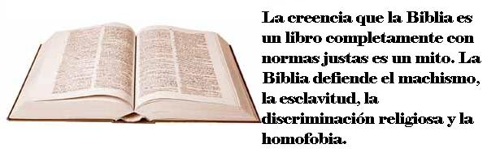
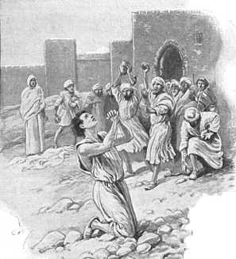

“La Biblia y la Iglesia han sido los mayores obstáculos en el camino de la emancipación de la mujer.”
—Elizabeth Cady Stanton, Freethought Magazine, Septiembre de 1986.
Estamos viviendo un período de crecimiento explosivo del cristianismo fundamentalista en América Latina como resultado a su vez del desarrollo de estos grupos en los EE.UU. Cada vez con mayor frecuencia los estadios se llenan con personas que llevan Biblias bajo sus brazos, y en sus cabezas la idea que este libro es, desde el Génesis hasta el Apocalipsis la palabra de Dios a la humanidad. Los cristianos fundamentalistas también afirman que el ser que dictó o inspiro este libro es un ser de infinita bondad, y por lo tanto incapaz de hacerle mal a las personas, especialmente a las inocentes e indefensas.
Hay un texto de la Biblia es citado como defensa de la misma Biblia con relativa frecuencia, pues es muy comentado en los sermones y en los estudios bíblicos.
“y desde niño has sabido las Sagradas Escrituras, las cuales te pueden hacer sabio para la salvación por la fe que es en Cristo Jesús. Toda la Escritura es inspirada por Dios y útil para enseñar, para redargüir, para corregir, para instruir en justicia ”
—2 Timoteo 3: 15-16
Este texto es parte de la base que tienen millones de creyentes para defender las creencias de su religión y para defender una moral basada en la Biblia, o mejor, para avalar la interpretación que cada grupo le da. Yo también creí estas ideas por 19 años pero ahora difiero de ellas.
Hipótesis para poner a prueba
Con toda seguridad si preguntamos a la mayoría de los cristianos fundamentalistas de hoy sobre su posición sobre el machismo ellos te dirán que se esta actitud es discriminatoria e injusta. Es más, ellos dirán que en algunas de sus iglesias se permite que haya mujeres con el título de pastor o ministro, que predican, aunque esto no ocurre entre muchas denominaciones cristianas.
En este escrito quiero invitar al lector a analizar tres hipótesis sobre la relación de la Biblia con el machismo y constatarlas con la misma Biblia. Partiré de la premisa que el machismo es una forma de discriminación y que como tal es una injusticia.
Las hipótesis son:
Hipótesis 1. La Biblia no contiene normas a favor o en contra de cualquier forma de machismo.
Hipótesis 2. En la Biblia se condena la discriminación de la mujer, especialmente en los textos en los que se expresa la voluntad del Dios judeocristiano, lo cual indicaría que
2a. el Dios juedeocristiano es bueno y justo porque imparte normas para el bienestar de todas las personas. (Asumiendo que él sea en realidad el autor de la Biblia).
2b. los autores de la Biblia, sin estar inspirados por una deidad crearon una obra que contiene normas contra el machismo.
Hipótesis 3. En la Biblia hay normas machistas y por lo tanto discriminativas, porque
3a. este conjunto de libros es producto de unos autores influenciados por su medio cultural machista. Estos autores crearon una normatividad social y religiosa que mantenía un orden social en el que la mujer ocupa un papel secundario en la sociedad.
3b. el Dios del judeocristianismo, quien inspiró o dictó la Biblia es machista, y por lo tanto injusto.
Ahora vamos a los textos de la Biblia a ver cual de las tres grandes hipótesis sobrevive.
La mujer como objeto
En el libro de los Jueces, (Antiguo Testamento) podemos leer como durante las guerras libradas por los israelitas, las mujeres de los vencidos son tomadas como botín. Como si fuesen ganado o sacos de harina. Pero hay más. Las mujeres que se tomaban eran aquellas que fuesen vírgenes, las otras se masacraban.
“¿Qué haremos en cuanto a las mujeres para los que han quedado? Nosotros hemos jurado por Jehová que no les daremos nuestras hijas por mujeres.
Entonces la congregación envió allá a doce mil hombres de los más valientes, y les mandaron, diciendo: Id y herid a filo de espada a los moradores de Jabes-Galaad, con las mujeres y niños. Pero haréis de esta manera: mataréis a todo varón, y a toda mujer que haya conocido ayuntamiento de varón.
Y hallaron de los moradores de Jabes-Galaad cuatrocientas doncellas que no habían conocido ayuntamiento de varón, y las trajeron al campamento en Silo, que está en la tierra de Canaán.
—Jueces 21: 7, 10-12
¿Qué debemos decir después de este texto? ¿Quizás: Palabra de Dios. Te alabamos Señor!, Como se hace en la Misa? ¿O quizás debo exclamar Amén!, Como en los cultos protestantes? ¿Son estos los valores familiares que queremos para la sociedad? Los apologistas cristianos pueden alegar que aquí no se menciona la voluntad directa del dios Jehová, pero notemos que él no se opone, no dice nada en contra. Algo curioso para un dios meticuloso que dictó con detalles que tipos de pieles debería tener su santuario, y el orden en que estas deberían colocarse (Éxodo. Capítulo 26). Claro está que los pastores evangélicos y carismáticos no leen estos textos en sus sermones, y la mayoría de los creyentes ignoran su existencia.
“Y si vieres entre los cautivos a alguna mujer hermosa, y la codiciares, y la tomares para ti por mujer, la meterás en tu casa; y ella rapará su cabeza, y cortará sus uñas, y se quitará el vestido de su cautiverio, y se quedará en tu casa; y llorará a su padre y a su madre un mes entero; y después podrás llegarte a ella, y tú serás su marido, y ella será tu mujer.”
“Y si no te agradare, la dejarás en libertad; no la venderás por dinero, ni la tratarás como esclava, por cuanto la humillaste.”
—Deuteronomio 21: 11-14
Para mi este texto es de los más “horrorosos” de la Biblia, por lo que no me quedan dudas que la Biblia es un compendio de escritos de tribus de bárbaros, y que esta lejos de ser -la verdad infalible y fuente para la moralidad humana- como afirman los cristianos. Note también, que al decir “no la venderás por dinero, ni la tratarás como esclava…” está dejando claro que hay otros casos en los que esto si se puede hacer. La Biblia además de machista es esclavista. De hecho tiene una sección poco después de los 10 mandamientos que la reglamenta (Éxodo 21: 1-11 y Deuteronomio 15: 12-18). De estos textos se apoyaban los Bautistas del sur en EE.UU para abogar por el mantenimiento de la esclavitud.
Pero aún hay más textos machistas. Vean como el dios judeocristiano, advierte que como castigo estregará las esposas de los israelitas a otros. La mujer tratada como objeto. ¿Es esto justo?
“Por tanto, daré a otros sus mujeres, y sus campos a quienes los conquisten; porque desde el más pequeño hasta el más grande cada uno sigue la avaricia; desde el profeta hasta el sacerdote todos hacen engaño.”
—Jeremías 8: 10
“Así ha dicho Jehová: He aquí yo haré levantar el mal sobre ti de tu misma casa, y tomaré tus mujeres delante de tus ojos, y las daré a tu prójimo, el cual yacerá con tus mujeres a la vista del Sol.”
—2 Samuel 12: 11
Es claro que estoy abogando por la hipótesis 3a.
¿Dar luz a una mujer hace más inmundo un parto?
Una interesante declaración dada por el dios Jehová sobre la impureza de la mujer después del parto dice claramente que una mujer que haya dado a luz a una niña, dura inmunda por más tiempo, que si hubiese dado luz a un varón.
“Hablo Jehová a Moisés, diciendo:
Habla a los hijos de Israel y diles: La mujer cuando conciba y dé luz a un varón, será inmunda 7 días…. Y si diera luz a una niña, será inmunda dos semanas…”
—Levítico 12: 1, 2 & 5
Inmundo es un adjetivo muy horrible. Pero hay otro texto que indica que mientras una mujer este menstruando es inmunda. Veamos:
“Cuando la mujer tuviere flujo de sangre, y su flujo fuere en su cuerpo, siete días estará apartada; y cualquiera que la tocaré será inmundo hasta la noche. Todo aquello sobre que ella se acostaré mientras estuviere separada será inmundo…”
—Levítico 15:19 y 20
Esta norma es según Levítico 15:1 una norma dictada directamente por el dios Jehová a Moisés. Queda claro cual es el estatus social que le da el dios Jehová a las mujeres.
El matrimonio con el hombre a la cabeza
Algunos pastores y sacerdotes en la actualidad predican la “igualdad de condiciones entre los cónyuges”, pero si han de seguir su doctrina de Sola escriptura nos encontramos que la Biblia no apoya la igualdad entre las partes. Léalo Ud. mismo:
“Porque la mujer casada está sujeta por la ley al marido mientras éste vive: pero si el marido muere, ella queda libre de la ley del marido.”
—Romanos 7: 2
“Asimismo vosotras, mujeres, estad sujetas a vuestros maridos; para que también los que no creen a la palabra, sean ganados sin palabra por la conducta de sus esposas…”
—1 Pedro 3: 1
“Pero quiero que sepáis que Cristo es cabeza de todo varón, y el varón es cabeza de la mujer… Porque el varón no debe cubrirse la cabeza, porque él es imagen y gloria de Dios; pero la mujer es gloria del varón. Porque el varón no procede de la mujer, sino la mujer del varón, y tampoco el varón fue creado por causa de la mujer, sino la mujer por causa del varón.”
—1 Corintios 11: 3, 7, 8 & 9
“Las casadas estén sujetas a sus propios maridos, como al Señor; porque el marido es cabeza de la mujer, así como Cristo es cabeza de la iglesia, la cual es su cuerpo, y él es su Salvador.”
—Efesios 5: 22 & 23
Mujeres sin derecho a expresarse
“Vuestras mujeres callen en las congregaciones; porque no les es permitido hablar, sino que estén sujetas, como también la ley lo dice.
Y si quieren aprender algo, pregunten en casa a sus maridos; porque es indecoroso que una mujer hable en la congregación.”
—1 Corintios 14: 34 & 35
Note que la epístola a los corintios (Nuevo Testamento) está dirigida a un público no judío, pues va dirigida a los ciudadanos de la ciudad de Corinto, en Grecia. Por lo que la disculpa de que el machismo estaba restringido a los pueblos del Medio Oriente, o que sólo era permitido en los tiempos del Viejo Testamento es falsa.
“La mujer aprenda en silencio, con toda sujeción.
Porque no permito a la mujer enseñar, ni ejercer dominio sobre el hombre, sino estar en silencio. Porque Adán fue formado primero, después Eva; y Adán no fue engañado, sino que la mujer, siendo engañada, incurrió en trasgresión.
Pero se salvará engendrando hijos, si permaneciere en fe, amor y santificación, con modestia.”
—1 Timoteo 2: 11-15
Una vez interrogué a un adventista al respecto y le dije: “¿En su iglesia dejan hablar a las mujeres ante el público?, pues de ser así no están aceptando un mandato bíblico.” Él afirmó que esto era para los tiempos del Antiguo Testamento, por lo que recuerdo su cara de asombro cuando le mencioné que la ordenanza estaba en 1 Timoteo y 1 Corintios. Luego le pregunté ¿Tengo que creer que la Biblia es moralmente correcta a pesar de estos textos? A lo cual respondió: ¿Entonces en qué crees? ¿No negarás que existe un Dios? ¿No creerás eso de que venimos del simio?

¿Un dios morboso?
¿Cuál es la obsesión del dios judeocristiano con las partes íntimas de las mujeres?
Yo, pues, descubriré también tus faldas delante de tu rostro, y se manifestará tu ignominia…
—Jeremías 13: 26
Asimismo dice Jehová: Por cuanto las hijas de Sion se ensoberbecen, y andan con cuello erguido y con ojos desvergonzados; cuando andan van danzando, y haciendo son con los pies; por tanto, el Señor raerá la cabeza de las hijas de Sion, y Jehová descubrirá sus vergüenzas.
—Isaías 3: 16-17
(La versión Dios habla Hoy dice: Y pondré su desnudez al descubierto; mientras que la Biblia en Ingles King James Versión dice: And the Lord will discover their secret parts (Y el Señor descubrirá sus partes secretas). ¿Es este Dios al que siguen y adoran los cristianos. A un ser vengativo, misógino y morboso?
Machismo dentro de los 10 mandamientos
Los fundamentalistas hablan que los 10 mandamientos son la ley más perfecta, justa y moral. ¿Es esto verdad? Examinemos pues el décimo mandamiento, tal como está en la Biblia:
Éxodo 20: 17
No codiciarás la casa de tu prójimo, no codiciarás la mujer de tu prójimo, ni su siervo, ni su criada, ni su buey, ni su asno, ni cosa alguna de tu prójimo.
Note como el mandamiento pone a las mujeres como propiedad del hombre, de la misma manera como lo son los bueyes y los asnos. Note que dice “no codiciaras la mujer de tu prójimo”, pero no dice a la mujer: no codicies el esposo de otra mujer, pues según la Biblia, la mujer es un objeto, es propiedad del hombre. Aquí también hay otra cuestión que demuestra la imposibilidad de basar una moralidad basada en la Biblia en el siglo XXI, pues el mandamiento es permisivo con la esclavitud al ordenar “no codiciarás el siervo del prójimo”.
Y que dijo Jesús sobre las normas machistas del Antiguo Testamento. Las palabras exactas de Jesús sobre cualquier tema serán un misterio, porque lo registrado en los evangelios se escribió muchos años después de su muerte. Pero asumiendo que estos registraran su opinión tomemos lo dicho en Mateo 5:17. “No penséis que he venido a abrogar la ley o los profetas; no he venido para abrogar, sino para cumplir.”
¡La Biblia ordena matar a tu esposa si resulta no ser virgen!
“Cuando alguno tomare mujer, y después de haberse llegado a ella la aborreciere, (…) y dijese: A esta mujer tomé, y me llegue a ella, y no la halle virgen; entonces el padre de la joven y su madre tomaran y sacaran las señales de la virginidad de la doncella a los ancianos de la ciudad en la puerta; y dirá el padre de la joven a los ancianos: Yo di mi hija a este joven y él la aborrece; (…) pero ved aquí las señales de la virginidad de mi hija. Y extenderá las vestiduras delante de los ancianos de la ciudad. Entonces los ancianos tomaran al hombre y lo castigaran; y le multaran en 100 piezas de plata (…) Más si resultase verdad que no se halló virginidad en la joven, entonces la sacaran (…) y la apedrearan los hombres de la ciudad, y morirá…”
—Deuteronomio 22: 13-21
Note que la pobre mujer no tiene muchas esperanzas de salvarse. Primero tiene que mostrar que en su primera relación con su esposo, perdió la virginidad, por lo que tiene que llevar la sabana manchada de sangre. Ahora, que si este procedimiento -totalmente vergonzoso para ella— no es posible, ella morirá apedreada, sin ninguna posibilidad de considerarse inocente. Pero si el marido miente tan solo le multaran con 100 piezas de plata. Ahora imagínese usted. ¿qué les sucedió a todas aquellas jóvenes que siendo vírgenes tenían el himen roto, por algún accidente? No puede ningún cristiano decir que este mandato no es machista. ¿Puede una persona racional considerar que la Biblia es útil en nuestros días como fuente de consejos? ¿Y más aún que todo lo que dice tiene que creerse?
Los adventistas, evangélicos, bautistas, Testigos de Jehová, pentecostales y cientos de creyentes seguidores de la Biblia predican que este libro es inspirado por Dios, y que por lo tanto constituye la Palabra de este ser. Si esto es así ¿qué pueden decirnos sobre textos tan machistas como Deuteronomio 21: 11-14 y Deuteronomio 22:13-21, entre otros? Con los creyentes que he tenido la oportunidad de platicar me han dicho que estas normas deuteronómicas ya no tienen validez para los cristianos, que eran solo para los judíos. Aducen que con Cristo las normas del Deuteronomio y el Levítico (quinto y tercero libro de la Biblia respectivamente) quedaron abolidas. ¿Y en qué parte de la Biblia lo dice explicita y claramente? ¿En que versículo del Nuevo Testamento revierten y condenan el machismo o la esclavitud avalada en el Antiguo Testamento? ¡No lo hay! Y de hecho ya cité versículos machistas en el Nuevo (Efesios 5: 22 & 23; 1 Corintios 14: 34 & 35; Romanos 7: 2, entre otros.) ¿Y si es cierto que con Cristo quedó abolida la ley de Moisés entonces porque los cristianos citan en sus libros, sermones y estudios bíblicos otros textos del Levítico y el Deuteronomio para avalar el cumplimiento de ciertas cosas? Por ejemplo citan Deuteronomio 23:19 para prohibir que los miembros de la congregación cobren interés a los prestamos hechos a sus correligionarios, o Deuteronomio 22:5, para prohibir que las mujeres usen prendas de hombre. Más exactamente para prohibir que usen pantalón (en algunas Iglesias), o Deuteronomio 23:17 y Levítico 18:22 para expulsar de la Iglesia a un homosexual o Deuteronomio 14:22-23 y Levítico 27:30-32 para legitimar el cobro del diezmo (Esto último los pastores no lo consideran abolido. ¡Jamás! Nunca lo han pensado. ¿Cómo abolir la norma levítica y deuteronómica que les genera sus abultados ingresos libres de impuestos?).
Abolidas o no, no hay razón para que durante todos los siglos transcurridos antes de la supuesta derogación hecha por Jesús las mujeres que vivieron bajo el Antiguo Testamento fueran relegadas, silenciadas y apedreadas. ¿Qué dirían los creyentes en el dios de la Biblia durante el Antiguo Testamento cuando se le cuestionaba la justicia de estas normas? ¿Dirían ellos: “No importa que ahora hayan normas que releguen a la mujer en un segundo lugar. En unos siglos vendrá Jesús, el Mesías y derogará estas normas”? Entonces el dios de la Biblia aplicó discriminación sexista en una época y en otra no. Más injusticias entonces. Pero no nos mintamos. Antes y después del Nuevo Testamento las instituciones judeocristianas han sido principalmente machistas, como lo son los grupos judíos que siguen ortodoxamente el Antiguo Testamento, como la comunidad Haresí. La Biblia y su dios Jehová o Yavhé discriminan de entrada a la mujer, la criminaliza y las castigan a todas, aún las que están sin nacer con los dolores del parto, a causa de una sola. Mejor trataba el dios Zeus a las mujeres y mejor suerte habrían tenido las mujeres si la mitología griega y no la judeocristiana se hubiera vuelto, por los giros de la historia, en la superstición de la mayoría, es decir en lo que ahora llaman la “religión verdadera”.
“A la mujer dijo (Dios): Multiplicaré en gran manera los dolores en tus preñeces; con dolores darás a luz a los hijos; y tu deseo será para tu marido, y él se enseñoreorá de ti”.
—Génesis 3:17
Otras versiones traducen la expresión “y tu deseo será para tu marido” como “Tu voluntad será sujeta a la de tu marido”. Salió la primera mujer del mítico Edén con la carga del machismo para siempre, para sus hijas y para sus nietas y bisnietas. Bien lo dijo Elizabeth Cady Stanton: “La Biblia y la Iglesia han sido los mayores obstáculos en el camino de la emancipación de la mujer”

Cuando los ateos y agnósticos discutimos con los cristianos cuestiones que han generado polémica en nuestros días como la eutanasia, el aborto en las primeras ocho semanas, o el matrimonio gay, es corriente que los creyentes se remitan a la Biblia como fuente de normas y última palabra. ¿Pero, se puede tomar este libro como una fuente moralmente confiable cuando tiene textos tan retrógrados como los que acabamos de leer? ¿Si toda escritura es inspirada por Dios y útil para enseñar, para redargüir, para corregir, para instruir en justicia (como lo dice 2 Timoteo 3:16) deberíamos entonces seguir el consejo de Deuteronomio 22:13-21 y apedrear a las mujeres que al casarse no fueran vírgenes o que simplemente tuviesen el himen roto? ¿Deberíamos segregar y evitar cualquier opinión o pregunta por parte de las mujeres en las congregaciones como lo indica 1 Timoteo 2:11-15? ¿Son estos textos abiertamente discriminativos una forma de “instruir en justicia” como lo afirma 2 Timoteo 3:16? ¿No sería mejor tener una discusión de corte humanista secular?
Machismo en los dirigentes cristianos
Los evangelios que ahora forman parte del Nuevo Testamento fueron cuidadosamente seleccionados después que el emperador Constantino hizo al cristianismo una religión legal y oficial. Es curioso notar que los evangelios escogidos establecen que Jesús escogió 12 apóstoles varones; Sin embargo, existen otros evangelios no escogidos (denominados apócrifos) que comentan que María Magdalena fue una importante discípula del movimiento de Jesús, lo cual indicaría que las mujeres pueden ocupar altos cargos en la Iglesia. Pero todos estos evangelios fueron suprimidos por los padres de la Iglesia, que de hecho eran varones y muy machistas, como veremos.
Los padres de la Iglesia Católica no se fueron con aguas tibias o mensajes edulcorados sobre su posición machista, como si lo hace el actual señor Ratzinger. Estas son algunas de las declaraciones de los sabios teólogos fundadores de la versión mayoritaria del cristianismo:
“¿Y no sabes tú que eres una Eva? La sentencia de Dios sobre este sexo tuyo vive en esta era: la culpa debe necesariamente vivir también. Tú eres la puerta del demonio; eres la que quebró el sello de aquel árbol prohibido; eres la primera desertora de la ley divina; eres la que convenció a aquél a quien el diablo no fue suficientemente valiente para atacar. Así de fácil destruiste la imagen de Dios, el hombre. A causa de tu deserción, incluso el Hijo de Dios tuvo que morir.”
—Tertuliano, Padre de la Iglesia, “De Culta Feminarum”, 1.1
“Es Eva, la tentadora, de quien debemos cuidarnos en toda mujer… No alcanzo a ver qué utilidad puede servir la mujer para el hombre, si se excluye la función de concebir niños.”
—San Agustín de Hipona, Padre de la Iglesia
“Las mujeres no deben ser iluminadas ni educadas en forma alguna. De hecho, deberían ser segregadas, ya que son causa de insidiosas e involuntarias erecciones en los santos varones.”
—San Agustín de Hipona
“Por el buen orden de la familia humana, unos han de ser gobernados por otros más sabios que ellos; por ende, la mujer, más débil en cuanto a vigor de alma y fuerza corporal, está sujeta por naturaleza al hombre, en quien la razón predomina. El padre tiene que ser más amado que la madre y merece mayor respeto porque su participación en la concepción es activa y la de la madre simplemente pasiva y material.”
—San Agustín de Hipona
Debo añadir que San Agustín, también es uno de los teólogos que defendió dogmas igual de razonables como lo es el de la Santísima Trinidad y el pecado original.
“Sus caras son como viento abrasador, y sus voces silbidos de serpiente, pero también aplican encantamientos nefastos a incontables hombres y animales. Y cuando se dice que su corazón es una red, se está hablando de la malicia insondable que impera en sus corazones.”
—San Ambrosio
“El organismo de las mujeres está dispuesto al servicio de una matriz; el organismo del hombre se dispone para el servicio de un cerebro.
—Federico Arvesu, médico jesuita, “La virilidad y sus fundamentos sexuales”, 1962
La reacción del papado a los movimientos feministas fue totalmente reaccionaria y retrógrada, Veamos la declaración del papa Pío (santo) XI:
“Cuantos de palabra o por escrito empañan el brillo de la fidelidad y la castidad nupcial, ellos mismos, como maestros del error, fácilmente echan por tierra la confianza y honesta obediencia de la mujer al marido. Y más audazmente algunos de ellos charlatean que tal obediencia es una indigna esclavitud de un conyugue respecto del otro; que todos los derechos son iguales entre los dos; y pues estos derechos se violan por la sujeción de uno de los dos, proclaman con toda soberbia que han logrado o que van a lograr quién sabe que emancipación de la mujer. Tal emancipación según ellos debe ser triple: en el régimen de la sociedad doméstica, en la administración del patrimonio familiar y en la facultad de evitar o suprimir la vida de la prole. Y así la llaman social, económica y fisiológica: fisiológica porque quieren que las mujeres a su arbitrio estén libres o se libren de las cargas conyugales o maternales (emancipación esta como ya dijimos de sobra, que no lo es sino un crimen horrendo); económica, por la que pretenden que la mujer, aún sin saberlo ni quererlo el marido, pueda libremente tener sus propios negocios, dirigirlos y administrarlos, sin tomar para nada en cuenta a los hijos, al marido y a toda la familia; y social, en fin, por cuanto aparta a la mujer de los cuidados domésticos, tanto de los hijos como de la familia, a fin de que sin preocuparse por ellos pueda entregarse a sus antojos y dedicarse a los negocios y a los cargos, incluso públicos”
—Papa Pío XI En su encíclica Casti connubii (Del matrimonio casto), dada el 31 de diciembre de 1930.
¿Se han preguntado por qué las mujeres no pueden administrar los sacramentos y ser sacerdotisas tanto en la Iglesia Católica como en la Iglesia Ortodoxa? La razón es un profundo machismo que ha tenido repercusiones sociales muy grandes. Creo que la oposición de la Iglesia Católica al divorcio se debió en gran medida a su idea de la dominación del varón sobre la mujer, más que en el hecho de salvaguardar la familia. ¿Cómo entonces se explica que la “Santa Iglesia” se opusiera a que una mujer se divorciara aún en caso de violencia física, psicológica o sexual por parte de su conyugue?
Por otra parte el protestantismo también ha mantenido a la mujer en una situación en la que no puede participar en iguales condiciones que los hombres. En la Iglesia Adventista del Séptimo Día si una mujer estudia teología al igual que un varón no puede llegar a ser pastora de una congregación, solo por cuestión de género. Situaciones igual de discriminatorias se ven entre los Bautistas, Pentecostales, y en otros grupos más alejados del protestantismo histórico, como los mormones y los Testigos de Jehová. Algunas sin embargo, han permitido a las mujeres oficiar los cultos religiosos, como es el caso de la Iglesia Anglicana. Esta, un poco más abierta a la participación democrática, incluso ha ordenado obispo a mujeres y ha permitido que personas de orientación abiertamente homosexual puedan ser ministros.
Veamos un poco las opiniones del padre del protestantismo sobre la condición de la mujer:
“Tengan sus hijos y hagan como puedan; si mueren, benditas sean, porque seguramente mueren en medio de una noble labor y de acuerdo a la voluntad de Dios… Así ven ustedes cómo son débiles y poco saludables las mujeres estériles; aquéllas bendecidas con muchos niños son más saludables, limpias y alegres. Pero si eventualmente se agotan y mueren, no importa. Que mueran dando a luz, que para eso están.”
—Martín Lutero
La rama del fundamentalismo cristiano nacido en EE.UU. que se propaga rápidamente en Latinoamérica se empeña en defender abierta o subrepticiamente la superioridad del varón con base a los textos de la Biblia, arriba ya comentados. Un ejemplo de esto es el teleevangelista y multimillonario conservador Pat Robertson. Cabe recordar que este predicador no es uno más de los miles que hay en la Unión Americana. Robertson es un predicador que ha liderado el avance del conservadurismo que ha tomado los EE.UU. últimamente. Pat Robertson es el líder de buena parte del electorado estadounidense que fue clave en la elección y reelección de su amigo personal George W. Bush. Sus posiciones machistas se han conocido a través de su programa el Club 700. En 1992 hizo dos declaraciones muy comentadas, de la última, por ejemplo, hizo eco la prensa y los blogs de la Internet. Veamos:
“Sé que a las damas les duele oír esto, pero si se casan, han aceptado el liderazgo de un hombre, su esposo. Cristo es la cabeza del hogar, y el esposo es la cabeza de la esposa, y así es como son las cosas, punto.”
Sobre el feminismo afirmó que es:
“un movimiento socialista contrario a la familia, que estimula a las mujeres a abandonar a sus maridos, matar a sus hijos, practicar la brujería, destruir el capitalismo y a convertirse en lesbianas.”
Y después de todo esto me siguen llegando correos electrónicos de cristianos diciéndome que están orando por mí para que vea la luz. No me crean tan…
En conclusión…
Iniciando este texto planteé tres hipótesis. La primera es que “la Biblia no dice nada a favor o en contra del machismo”; La segunda dice que “en la Biblia se condena la discriminación de la mujer, especialmente en textos en los que se expresa la voluntad del Dios judeocristiano”; y la tercera dice “En la Biblia hay normas machistas y por lo tanto discriminativas”.
Después de leer estos textos bíblicos, se puede concluir sin lugar a dudas que la hipótesis correcta es la tercera. El lector notará que las hipótesis 2 y 3 se han subdividido. Como optamos por la tercera recordaré las hipótesis 3a y 3b:
3a. En la Biblia hay normas machistas y por lo tanto discriminativas porque este conjunto de libros es producto de unos autores influenciados por su medio cultural machista. Estos autores crearon una normatividad social y religiosa que mantenía un orden social en el que la mujer ocupa un papel secundario en la sociedad.
3b. En la Biblia hay normas machistas y por lo tanto discriminativas porque el Dios del judeocristianismo, quien inspiró o dictó la Biblia es machista, y por lo tanto injusto.
¿Cuál escoger? yo me inclinó por la 3a, porque considero que todos los textos sagrados que la humanidad a afirmado tener siempre han revelado leyes, normas y mitos que son producto de necesidades sociales y psicológicas de sus creadores y porque hasta el momento no hay pruebas concluyentes de una revelación divina en el pasado o en el presente. Escoger la hipótesis 3b sería una contradicción para los cristianos que afirman que el dios de la Biblia es un ser misericordioso y justo.
Por otro lado, el testigo de Jehová que golpea a tú puerta o los cristianos “nacidos de nuevo” tienen la escogencia muy difícil. Ya sabemos que la Biblia contiene textos machistas, pero la opción 3b es muy dura y contraria a la idea que Dios es bueno y la Biblia es la palabra expresa de este ser benevolente. Lo realmente curioso es ver como los creyentes en una especie de anquilosamiento se aferran a su fe en la Biblia a pesar que se les muestran estos textos en su propia Biblia. ¡Qué fuertes son los efectos del opio del pueblo!
Cualquiera sea la reacción de los creyentes, si nos basamos en la razón concluiremos que la Biblia es un conjunto de escritos de bárbaros del Medio Oriente, y es ridículo creer que este libro sea más ético o perfecto que cualquier otro que se halla escrito. Sin embargo, esta reflexión debe ir más allá. En los congresos de EE.UU. y varios países latinoamericanos hay congresistas cristianos liderando o bloqueando iniciativas de proyectos de ley “basados en la Biblia”. Sus metas son oponerse a el aborto terapeútico, a leyes de seguridad social y derechos patrimoniales de parejas homosexuales (como ocurrió en junio de 2007 en Colombia), o el matrimonio homosexual, la eutanasia, o campañas sobre educación sexual. Mi invitación es que estos temas se analicen sin el paraguas retrógrado de la Biblia, porque como vimos es poco útil en temas de legislación moral, además porque la discusión debe darse en términos de una ética laica, reflexiva, participativa, y por lo tanto democrática.
Volver a la sección Sociedad y religión
Comentarios
Comments powered by Disqus